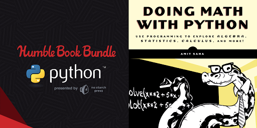

No Starch Press has launched a "Pay what you want" Python Humble Bundle running from April 5th - April 19th!
Your purchases will help support the Python Software Foundation and I am excited to announce that Doing Math with Python is part of it.

For 1+ USD you can get three books including "Doing Math with Python"! For 15+ USD you get nine excellent Python books!
If you are using Ubuntu 16.04 and don't want to install the Anaconda
Python distribution for trying out the book's
programs or
the sample solutions, this
post is for you.
Ubuntu 16.04 already comes with Python 3 installed, so we only need to install
the following packages - matplotlib, matplotlib-venn, sympy and idle3.
I spoke at the PyCon Australia Education Seminar on August 12, 2016. The video of the talk is now up.
Thanks to Next Day Video!
The PDF slides and the demos as Jupyter Notebooks (Python 3) are here. I have some instructions to download them and try them out. If you face any issues, or have a question, please let me know.
Thank you to all the PyCon Australia organizers and the Education seminar organizers for a great mini conference
and the opportunity to be a part of it.
I attended the PyCon Australia 2016 Education seminar held on 12th August at Melbourne, Australia.
I loved the energy of the seminar and was great to hear about all the ways educators in Australia are
using Python for their teaching. Here are some notes I took, which I also link with the videos. You can
find all the videos here.
Hello everyone, I will be speaking at the PyCon AU education seminar coming August 12, 2016 at Melbourne, Australia (3.00 - 3.40 PM).
I have put up my in progress slides (PDF) and the demos as Jupyter Notebooks (Python 3), I plan to use during the talk on GitHub. If you are coming along, please let me know if there is anything specific I can share and discuss.
A big thank you to all of you who turned up for the webcast across the world. I really had a great time and hope the session was informative to all of you. For those who didn't make it to the webcast, it's now available for viewing.
The slides, transcript and the demos are all available at the GitHub repository. Feel free to use them in any capacity you find useful. If you already have Anaconda installed, get the above code, and run jupyter-notebook from the same directory to be able to play with the code.
Some of you asked a number of questions which I couldn't answer as well as I would have wanted to during the webcast, so I will make a better attempt below:
Q: What is the difference between an interpreter, ide and text editor? And what do you recommend for beginners?
An interpreter is what runs your program. Without going into the details, the Python interpreter is what converts a statement such as print("Hello") to a form that can be understood by the computer to finally print Hello on screen.
An IDE or Integrated Development Environment is a software application where we can write programs and run them usually via Graphical User Interface. IDEs generally feature helpful features such as code completion and can be useful when working with large projects. A text editor is for writing our programs or other text. It usually doesn't support features that an IDE would support but of course, you can configure and enhance text editors to give you IDE-like features.
For beginners, I recommend starting with text editors. I think that doesn't overwhelm someone who is learning with the IDE features. That said, IDLE is a good in-between choice for beginners and one that I personally use in the book and definitely would be my first choice.
Q: What library do we use for importing metric units that works well with sympy?
I would recommend taking a look at SymPy's Units module and see if it has what you need. In addition, and if you already don't know about it, pint would be another library to look at.
Q: Do you use notebook for exploratory work?
Yes, I use notebook for exploratory work. I think notebooks are great when you want the code and result together in a single document. It's great for sharing too. I recently created slides as a Notebook.
Q: Can Sympy be used for the development in a engineering software (i.e. Finite Element Method)? Would the computational speed be (good)? (Not sure about the second part of the question)
I haven't worked much with Cython. I know about it and what it can useful for. So, I guess if you are looking for speed, definitely look into it. I would also recommend looking at Numba. Sagemath is more of a system itself than a library. It integrates popular Python libraries and would definitely be something to explore.
Q: Should students use IDLE or a notebook format?
I would recommend using IDLE to start with. It gives the opportunity for the student to at least get an idea of the cycle of editing code and running it. I would only introduce notebook later and in addition to IDLE. Both have their merits, but Notebook just introduces one more thing to grasp in the beginning.
Q: Any recommendations for introducing 3D graphics e.g. polyhedrons on screen?
I haven't explored them, you may want to look at Pi3D or VPython.
Q: How well do SymPy and Numpy work together?
No personal experience, but searching a bit, it looks like you may want to look at SymPy's Lambdify feature. The SymPy google group may give you a better answer.
Q: You are working in Jupyter - can the "app"s you should be embedded in a regular HTML web page?
I haven't personally tried this. I think this post may give you clues to do it. O'Reilly Media's project thebe may be another option to look at.
Announcement post
I am very excited to share that I am doing a webcast this coming week with O'Reilly titled
"Doing Math with Python". You can register for it on the event page.
Here are the date and time of the webcast:
Wed, June 29th at 7 PM, San Francisco
Wed, June 29th at 10pm, New York
Thu, Jun 30th at 3am - London
Thu, Jun 30th at 7:30am - Mumbai
Thu, Jun 30th at 10am - Beijing
Thu, Jun 30th at 11am - Tokyo
Thu, Jun 30th at 12pm - Sydney
I have created a GitHub repository which
will have the rough transcript, final slides and the code examples as Jupyter Notebooks.
Hi everyone, I have uploaded the slides for my upcoming talk at the PyCon Education Summit. If you are coming to the talk, feel free to have a look at the slides and have any questions/comments ready for me.
The slides are made using Jupyter Notebook + nbconvert magic. Thank you to everyone who makes these things happen. You can see the slides notebook here.
As a PyCon special, No Starch Press has setup a discount code PYCONMATH code which will give you 30 % off my book, Doing Math with Python and is valid from May 26th - June 8th.
You can get both the updates when you install Anaconda 4.0 or updated
your existing Anaconda installation:
$ conda update conda
$ conda update anaconda
I have so far verified both on Mac OS X and Linux. If you find any
issues on Windows, please email me at
doingmathwithpython@gmail.com or post your query/tip to any of the
following community forums:
Readers have shared how they are finding Doing Math with Python by
posting reviews on Amazon and their own blog. You can view all of them
on the Reviews page.
Some readers have also been kind enough to let me know personally how the book
has helped them to restart their programming, or looking at something
they have been putting off. As the author, I think this is the highest
level of appreciation that I could have hoped for.
Recently, Aaron Meurer (the lead developer of SymPy) mentioned the
book in an episode of
Podcast.__init__ titled "SymPy with Aaron Meurer". If you are curious
to learn more about SymPy, I would recommend listening to it.
I am curious to hear more. If you want to get in touch personally,
please do so via any of the following channels:
Once you download the solutions ZIP file, and extract it you will
find the solutions for each chapter in the corresponding sub-directory.
The PDF file contains explanations for each of the solutions
similar to the explanations for the programs in the book.
Before you can try the programs out, you will have to open them first in IDLE.
Let's consider the solution to a challenge posed in Chapter 6 to draw
the Mandelbrot set - mandelbrot.py. Start IDLE and click on the menu item File >
Open and navigate to the location where you extracted the directory
above and open the file mandelbrot.py.
Snapshot of the source code
Running the program
To run the program, click on Run > Run Module and you should see
the Mandelbrot set in the matplotlib window.
Mandelbrot set
All the solutions should be ready to run, try them out, make changes
to experiment and let me know what you come up with!
Email me at doingmathwithpython@gmail.com or post your query/tip to any of the
following community forums:
The first code snippet above is an example of breaking a long line into two (or more) lines so that we don't end up with really long lines in our code. How long should a line be when you should think about breaking it? If your statement's length is more than 80 characters, you should think about breaking it up.
In the book, we often had to do so because of layout reasons even though the statement may not have exceeded 80 characters, and in your projects you will want to do it so that your statements are easier to read and on the average all lines have a similar length. This is formalized (among other things) in PEP 8.
Note that the examples below will for illustrative purposes break lines waaaaay less than 80 characters.
How do you break?
When not calling function
When you are not calling a function, you essentially have two choices:
Use paranthesis
This is exactly how we break the long statement in the example we started this article with. For the moment ignore the call to print() and assume that the statement is:
s = 'Area: {0}, Estimated ({1}): {2}'.format(area_of_circle, points, estimate(radius, points))
This essentially just creates the string s. If we were to split this statement over multiple lines, we would do the following:
The line continuation operator, \ can be used to split long statements over multiple lines. Here is how we could split the above statement using \ instead:
At the end of every line (except the last), we just add a \ indicating that the next line is also a part of the same statement.
Breaking up those long if statements
Often I have to break long if statements and is in fact one of the most common cases I face at work where I have to break the statement into multiple lines. Here is an example using both the approaches above:
# Using parenthesis
if (cond1 and cond2 and cond3
and cond4):
# True block
else:
# False block
# Using line continuation operator
if cond1 and cond2 and cond3 \
and cond4:
# True block
else:
# False block
When calling functions
By default, when calling functions you can just press enter and without doing anything more keep writing your statement over multiple lines. For example:
x = 1
print(x,
x)
Hence, we could have broken the first example we saw as:
When calling format() we put the arguments over separate lines.
Learning more about Python coding style
If you liked reading this article, you may also find it worth your time going over the Python style guide. You may even find instances where I have not followed a guideline when writing the programs in the book. If you find one, let me know.
Chapter 5 (About) of the book discusses working with mathematical sets in
Python. While writing the chapter, I had a choice of whether to
use Python 3's built-in set data
structure or use SymPy's (0.7.6 +) FiniteSet class. I decided to go ahead
with the latter. My choice is briefly explained towards the end of
this post, but hopefully it will be clear before that.
Next, I describe how you can use Python 3's built-in set data
structure to create sets and perform set operations such as finding
the union, intersection or cartesian product of sets. For comparison,
I also show how you can do the same using SymPy's FiniteSet class.
Creating a set
We can create a set consisting of the elements {1, 2, 3} in Python 3
as follows:
>>>s1={1,2,3}>>>s1{1,2,3}
To create a set when the elements are already in a list (for
example), we would use the following syntax:
>>>items=[1,2,3]>>>s2=set(items)>>>s2{1,2,3}
The comparative operations using SymPy's FiniteSet class are:
To create an empty set,
in Python 3 you would use create an empty set object:
>>>e=set()>>>eset()
In SymPy, an empty set is represented by an EmptySet object. Thus,
you can either create an empty set by directly creating an
EmptySet object or by creating a FiniteSet object without
specifying any set members, like so:
The intersection() method can be used to find the intersection of
two or more sets created using either of the above approaches. Continuing
with the above three sets:
However considering that the cartesian product of two sets should be another set,
the product() function doesn't really then return the
cartesian product itself, but (an iterator to) the elements in it. Hence, if we
try to apply the result returned by the function directly to a method or
function which is expected to be applicable to a set, it will fail. For
example, itertools.product(s1, s2).union(s3) will result in an error, but
set(itertools.product(s1, s2)).union(s3) will work.
Using SymPy's FiniteSet, you can use the *
(multiplication or product) operator to find the cartesian product
and the result is a set itself. Thus, it is closer to what
a cartesian product is mathematically. An example follows:
To find the cartesian product of a set with itself, i.e. s1*s1 for
example, we pass in a keyword argument, repeat while calling the
itertools.product() function. The value of repeat is the
power we want to raise the set to. Thus, itertools.product(s1,
repeat=2) will calculate the cartesian product, s1*s1:
In SymPy, the ** operator can be used for finding the cartesian
product of a set with itself:
>>>s1=FiniteSet(1,2,3)>>>s1**2{1,2,3}x{1,2,3}
Subset/super set/proper subset checking
The issubset() and issuperset() methods are available for sets
created via either approaches to check if a set is a subset and super
set of another, respectively. Thus, s1.issubset(s2) will check if
s1 is a subset of s2.
Checking for proper subset and superset
To check if a set, s1 is a proper subset of another set,
s2 when using built-in set, we can do the following:
In SymPy, we have is_proper_subset() and is_proper_superset()
methods which can be used to check if a set is a proper subset or
superset of another, respectively. Thus, the above would be written as
s1.is_proper_subset(s2).
Calculating the powerset
For sets created via built-in set data structure, there is no
direct method available to create the power set. However, you can use the
powerset recipe described in the itertools documentation.
On the other hand, in SymPy, there is a powerset() method
available which returns the power set:
You can see that the powerset() method returns the power set and not the
elements in it.
Choice of SymPy's FiniteSet over set
From the above comparison, we can see that SymPy's FiniteSet
provides us with nice features such as being able to use the *
operator to find the cartesian product, ** operator to calculate
the cartesian product with itself and powerset() method for calculating the
power set. These are not present when using the built-in set data
structure. This was certainly a big driving factor in my choice,
since SymPy was also being used in other chapters of the book.
However, a key reason for my choice was that I wanted to show how we
can create sets which did not allow addition or removal once created -
like mathematical sets. This need was fulfilled by SymPy's
FiniteSet since it used Python's frozenset data structure and
not the set data sturcture.
The alternative to that would have
been to use frozenset directly, but I just did not like the idea
of it and I would have also missed out on the nice features
FiniteSet would provide (eventually). I should note here that once
I had made the decision to go with FiniteSet, I contributed patches
to SymPy to make the methods of FiniteSet more compatible with Python's built in set
and also implement minor features I discussed above.
Hi all, I am very excited to announce that the book is now available for
purchase in print and electronic formats from various online stores
including Amazon
and No Starch Press.
Please see the Buy page for others.
If you are keen to take a look at the contents and read a sample
chapter, please head over to No Starch's book page.
Alternatively, if you are keen to recieve a review copy, please email
doingmathwithpython@gmail.com and I will try to request one from the
publishers.
Stay in touch
You can stay connected with the book, its readers and me via the
following channels:
I am very excited to write that all the chapters has been completed
and the book is currently with the printers! You can find out more
about the contents (including a detailed table of contents) from the
About page.
You can stay connected with the book, its readers and me via the
following channels:
Hi all, this is the blog for my book "Doing Math with Python".
The first six chapters of the book are already available via the
publisher's early access program. You can learn briefly about each
chapter on the About page.
Going forward, I will be sharing updates regarding the book and posting
original content related to that discussed in the book.
You can stay connected with the book, its readers and me via the
following channels: